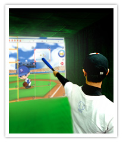

全球首創「專利型 高體感棒球打擊機」
100%臨場感 衝擊您的感官

歷經百年歲月的洗禮，棒球王國-台灣 洗淨鉛華再創顛峰，50年代的紅葉傳奇、70年代三級棒球狂飆、80年代世界五強 亞洲冠軍、90年代奧運銀牌，萬人空巷，舉國歡騰的景象猶如在目，台灣人的不服輸、堅持，讓台灣的棒球小將，不畏環境的惡劣，物資的缺乏，懷著對棒球的熱情，赤著腳、手執木棍在泥濘的地上，不斷地拋接練習，擊出了台灣輝煌的棒球神話。
與歐美其他國家相較，棒球王國的我們，雖擁有佳績，但在基礎棒球教育上卻是相當不足，不論是師資、資源、環境，棒球往往只能被當成興趣，而非職業，在缺乏健全的培訓機制下，許多棒球小將，國家未來的希望，卻因為棒球練習環境的惡劣，或是設備不足，造成許多運動傷害，嚴重地甚至遺憾終身。
國內培訓機制的不足，不減台灣棒球好將的光芒，我國旅美好手陳金鋒（1999年登大聯盟）、曹錦輝（2003年登大聯盟）、王建民、郭泓志（2005年登大聯盟）、倪福德（2009年登大聯盟），選手們在不斷地努力自我突破下，躍身國際體壇！
台灣的棒球，因缺乏完善的培訓環境，世代遞嬗，出現了人才斷層問題，台灣棒球稱霸亞洲的榮景不再！隨著科技的發展，其他國家培訓方法，也應因時代潮流，採用高科技、人體工學之設計，讓選手可以在無害、安全的環境，全力鍛鍊激發自己的潛力；反觀台灣，還在使用十幾年前傳統的發球設備，球路不明、速度不穩、高故障率，讓選手暴露於高危險環境，不斷無法精進球技，甚至產生運動傷害。
Superun 全壘打歷經多年研發、實驗，2011年成功首創全球專利型高體感棒球打擊機，全自動收球、即時擊發、打擊點同步記錄、高安全機制，互動式機台即時分析打擊狀況，人性化設計，詳細的數據表，比照球速、打擊角度、強度等元素，幫助您徹底了解自己，您不用再使用傳統九宮格、高危險地機械手臂球道，科技化人性介面搭配詳細的打擊記錄表，幫助球員了解自己調整到最佳打擊狀態，改善傳統練習機缺乏揮臂的功能，提升超快速球的打擊率，您也可以是台灣未來的棒球先生。
Superun 全壘打秉持著實在的台灣精神，致力研發人性化、高科技、符合人體工學之機台，免去折磨人的運動傷害，運動不用再揮汗如雨、跌跌撞撞，善用高科技，了解自己了解球路，成為運動好手也可以很有技巧，在Superun 全壘打持續努力下，相信未來台灣將會有更多體壇健將躍身國際體壇！